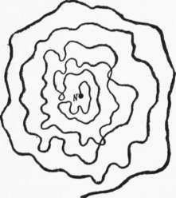
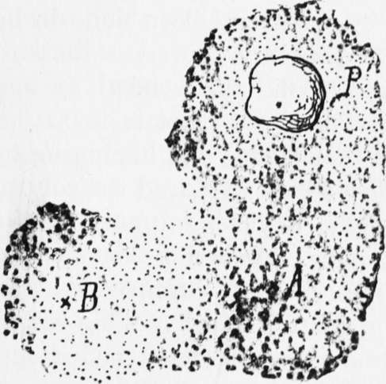

The End Is Perceptible
Description
This section is from the book "The Psychic Life Of Insects", by E. L. Bouvier. Also available from Amazon: The Psychic Life of Insects.
The End Is Perceptible
Whatever may be the manner in which insects direct their journeys, there comes a time when the place which they are seeking becomes perceptible. How is it, then, that they get to this point 1
It is, says Fabre, by a special faculty, a sort of topographic feeling, of which it is impossible for us to form an idea, having ourselves nothing anal-agous, and, to show how "subtile and precise" this faculty is, the ingenious entomologist turned his attention to the predatory Bembex which carries flies to its closed burrow. He scraped ofr the spot where the opening of the nest was found, hid the orifice under a stone, under a sheet of dung, and the insect always alighted at the precise point. That was proof to him that neither sight nor odor nor the memory of places plays any part in this phenomenon.
:To support his thesis of orientation with a force or sense which is unknown to us, Bethe made numerous experiments. He took a hive from its base, and put in its place an empty hive to which the bees on return made numerous visits before going to the familiar hive. He slowly turned this one on its side, and the arriving bees could not find the door when the rotation passed forty-five degrees. He moved the hive one or two meters, and the bees formed a swarm at the spot where the door had been. Then, following a method well known to bee-keepers, he placed an empty hive at this spot, into which the swarm immediately precipitated itself. From this he concludes that sight and odor do not serve the bees, and that an unknown force guides-these insects, not to the hive, but to the point where they have been accustomed to go.
But since the bees as well as the Bembex come to the customary end of their journeys, the "unknown force" of Bethe and the "topographic feeling" of Fabre seem to be nothing but memory. That is what Forel and Buttel-Reepen have observed, and it is, in fact, what experience shows. If the topography of the place is but slightly modified the insects are disturbed when they return. I placed a little flat stone on the closed nest in which a Bembex rostrata was shut up for the night.1
The next morning I found that the wasp had opened an orifice at the edge of the stone. The day after that, during the absence of the Bembex, I raised the stone and put it twenty centimeters from the orifice. The insect soon returned, carrying a fly, and went without hesitation to the border of the stone,-that is to say, twenty centimeters from the entrance to its burrow,-where it began to dig as if it had found a good place. I chased it away twice, and twice it came back to the same spot. Finally I put the stone where it was at first, and the Bembex immediately found the entrance to its lodging. It had fixed in its memory very exactly the topography of the place, and had associated the visual sensation of a little flat stone with that of the entrance to the nest. Marchand (1900) has made a similar experiment with the same insect, and Turner (1908) with the Anthophoras. Bordage relates that he disoriented a spider-hunter, Pison argentatum, by simply displacing the furniture of the room in which this wasp had built its mud nest. The Pelopseus wasps have the same habit as the preceding species, and are no less easily disoriented. Turner has stated that they found their nest with difficulty when he varied the play of light and shade in the locality where they were domiciled. Often the points on the way which strike the insect produce no impression on our senses. The Peckhams tried this with Bembex spinolce whose nest was found in the middle of a clear space quite uniform in appearance. They smoothed over the surface of the ground during the absence of the insect, which upon its return flew all around before finding the spot and then dug for some time before reopening the nest. It is clear that to these little creatures the least objects have a guiding value which larger bodies do not have, for it is necessary to fix the exact place where the very narrow entrance of the nest is to be opened. After he felled a sycamore in the immediate neighborhood of his hives, Bethe noticed that the bees were not at all troubled by the disappearance of the tree and entered their hives without hesitation. He wrongly concluded that the memory of places plays no part in the return to the nest, forgetting, without doubt, that while a large tree may serve as a guiding point from a great stretch of country it would not be a guide for the insect to the narrow door of its hive. How is it possible for insects to mark the exact point to which they ought to return? It is a fact well known to bee-keepers that the young bees when they leave the hive for the first time, and the old ones when they first leave a hive which has been moved, make a reconnaissance flight before their home. The bee, says Perez, begins in this flight to study "the door, the surroundings, and successively, farther and farther, the neighborhood," looking always toward the nest. Then, "when it has fixed in its memory the topography of the region which it inhabits," it turns its head away and ' ' learns to know and to fix in its memory the objects farther and farther from its house." This is not a simple hypothesis. The young bees, observes Buttel-Reepen, do not find their nest again when one takes them even a short distance, and the old ones are confused when one has carried their habitation very far from the places which they are accustomed to frequent.
1 E. L. Bouvier, Les habitudes des Bembex, 1901. (VAnnée psychol. 1900).
Most of the flying Hymenoptera, if not all, make these reconnaissance flights when they establish their nests, and many of them every time that they leave on a collecting-trip. The Peckhams have made some interesting observations on this subject. They have even put down graphically the flight which the insect makes before quitting its stamping-ground. It is' a spiral, the turns of which depart more and more from the orifice, but these turns are simply sinuous in Sphex ich-neumonea (Figure 8) while they are ordinarily complicated with numerous rings with Astata hi-color. Sometimes the reconnaissance tabes another character. When it leaves its nest, Ammo-phila urnaria sometimes hunts several days before finding its first caterpillar, which obliges it to go back to visit the place at intervals in order to keep the recollection of the locality fresh in its memory. When, on the journey, the wasp has to drop her victim, she starts on a flight of reconnaissance around it, which will permit her to find it again. This characteristic manceuver has been noticed by all biologists. It is often very short, but rarely insufficient. Evidently, aerial insects have an excellent and rapid topographic memory, to which, without doubt, the mosaic vision of their composite eyes contributes.
In support of this I will relate the following observation, which is one of the most suggestive among those which Bembex offers: A stone, P (Figure 9), flat and white, had been left several days about one decimeter from the opening,, A, of a burrow. One morning (during the absence of the Bembex) I covered under a uniform coat of sand, for a space of six or seven square decimeters, the poor blackish vegetation which surrounded the nest, and replaced the stone at the point P. Some minutes after this operation I saw a burrow, B, which I had* not noticed, open, and out came a Bembex, which closed it immediately, made some reconnaissance nights, and went away toward the fields. Its absence was short. It returned two minutes afterward without a«y prey, but, not having exactly taken its bearings on departure, it wandered in all directions for a quarter of an hour around the point B (the dotted space), scratching, digging, waving its antennae, after which it finished by finding the right point, and reentered. Meanwhile the Bembex of burrow A had returned, carrying a large Eristalis. Disconcerted by what had been done in her absence, she flew undecidedly for some instants over my artificial cover and then ended by bumping into the side of the stone (that is to say a decimeter away from the orifice) and beginning to dig. But she soon flew away, explored the country within a range of some meters, returned to dig near the stone, left again, finished by leaving her Eristalis, to begin digging again, explored the space marked with dots around A and P. This lasted forty-five minutes, and it would have lasted much longer. I came to the rescue of the poor creature, by showing her the orifice of her nest. What a difference in the return of the two wasps, and how important does the reconnaissance flight appear which permits the former to alight in the exact vicinity of her nest !
Fig. 8.-Reconnaissance route of Sphexichneu-monea when she leaves her nest N. (After the Peckhams).
Fig. 9.-Zone explored by two specimens of Bembex whose nests, situated at A and B in the neighborhood of a ilat stone, P, have been covered with sand before (B) and after (A) the issuance of the insect.
Continue to:
- prev: Aerial, Or Flying, Insects
- Table of Contents
- next: Non-Perceptible End With Or Without Intermediary Guiding Points